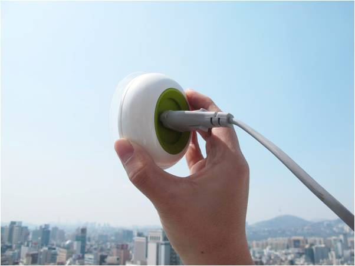
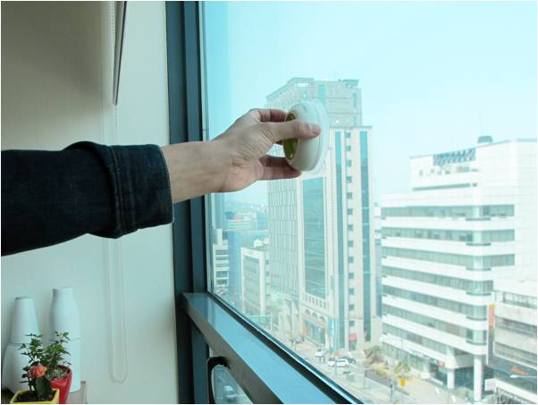
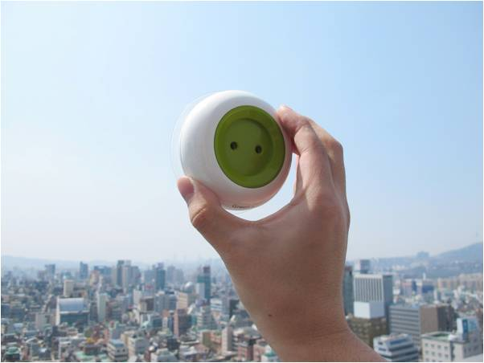

Exemple de rechargement solaire: EDF peut aller se rhabiller ! Window Socket est l’invention de deux designers Sud-Coréens, Boa Oh et Kyuho Song. Une invention comme on les aime ! Ce nouveau concept, qui n’est encore qu’un prototype, permet de coller cette prise électrique à une vitre ou tout autre support pour solutionner les problèmes de rechargement de batterie. Il s’agit en effet d’une prise électrique de poche que l’on peut emporter partout pour recharger nos gadgets favoris du quotidien ! Téléphone, ordinateur portable… Window Socket est simple d’utilisation. C’est une prise électrique mobile fonctionnant de manière autonome car elle intègre des minis panneaux solaires. Cet objet permet donc de recharger des objets du quotidien grâce — et vous l’aurez compris — à l’énergie solaire. Une invention qui ne tardera pas à faire parler d’elle… Cette idée de génie permet de nous faire consommer différemment l’électricité ! Window Socket se rapproche énormément des panneaux photovoltaïques que l’on connait bien. Cette société permet d’utiliser et de bénéficier de l’électricité gratuitement en collant tout simplement l’appareil sur une fenêtre. Grâce à ses cellules solaires intégrées et logées à l’arrière de l’appareil, la prise autonome va alors capturer l’énergie solaire afin de la transformer en électricité permettant par la suite de recharger n’importe quel objet ! D’après leur évaluation, il faudra 5 à 8 heures pour la batterie située à l’intérieur se charge jusqu’à atteindre les 1000 mAh. En effet, pour le moment, l’énergie du Windows Socket n’équivaut qu’à une demi-pile AA. Malgré cela, l’invention est plutôt intéressante et permettrait, même en l’état actuel, de dépanner en cas de manque d’énergie  Si l’on croit certaines études, la quantité de soleil que l’on reçoit sur terre est 3000 fois supérieure à nos besoins quotidiens. Des alternatives existent dans tous les domaines, il est plus que temps d’aider ce genre de projet à voir le jour. Avec le prix de l’électricité qui ne cesse d’augmenter chaque année, il grand temps que cette invention se concrétise !